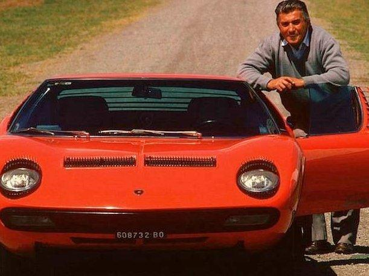

Lamborghini Historia

HISTORIA--> Automobili Lamborghini Holding S.p.A. comunmente conocido como Lamborghini es un fabricante italiano de automoviles deportivos fundado en 1963 por el fabricante de tractores Ferruccio Lamborghini (1916-1993). La empresa original se llamaba Automobili Ferruccio Lamborghini SpA, que derivaba a su vez de la Lamborghini Trattori S.A.. Desde los primeros coupes deportivos hasta los actuales, los Lamborghini siempre se han destacado por sus prestaciones y sus modelos exóticos.